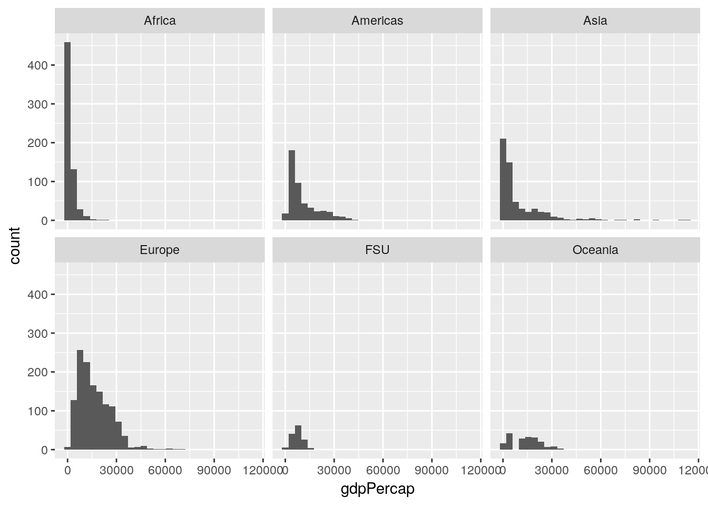

5 Introduction to Data Analysis
Far better an approximate answer to the right question, which is often vague, than an exact answer to the wrong question, which can always be made preciseJohn W. Tukey, The Future of Data Analysis
5.1 Exploratory Data Analysis
So far, we’ve learned about how to manipulate our data and how to graph our outputs. Both of these are critically important parts of what’s known as exploratory data analysis - or EDA. When you’re starting with a new dataset, you won’t always immediately know what trends and patterns might be there to discover. The idea at this stage isn’t to find out what’s causing any trends in the data, to identify any significant results you might have, or to get publishable or presentable figures and tables - the point is to understand exactly what it is that you’re dealing with. For more on this topic, check out this post.
5.1.1 Sidenote
EDA differs from what most people expect data analytics to be. Most people expect analytics to follow a clearcut path, going in a linear direction from deciding on a question to answering said question completely and accurately. But that really isn’t the point of data analytics, and especially not EDA, as Tukey (the father of data analytics and modern statistics) says at the top of this chapter. Most people think of analytics as something you do to improve the strength of your evidence, but that’s not what the discipline excels at.
Rather, the discipline shines best when it’s working on improving the question you’re asking, perhaps generating evidence for your case along the way. That’s not to say you can’t use analytics to try and answer a question - you can, and most people working in the field today use it in that manner. But you’ll be a better analyst if you keep yourself open to new surprises, and chase them down, rather than attempting to make your analysis follow a linear path.
Speaking of surprises, I really enjoy this quote from Nate Silver, founder and editor in chief of FiveThirtyEight:
You ideally want to find yourself surprised by the data some of the time — just not too often. If you never come up with a result that surprises you, it generally means that you didn’t spend a lot of time actually looking at the data; instead, you just imparted your assumptions onto your analysis and engaged in a fancy form of confirmation bias. If you’re constantly surprised, on the other hand, more often than not that means your [code] is buggy or you don’t know the field well enough; a lot of the “surprises” are really just mistakes.
—Nate Silver
Surprises are awesome, and are how discoveries are made. But at the same time, a lot of papers are retracted because their big surprise was actually just a glitch in the code. Whenever you find something you didn’t expect, make sure you go back through your code and assumptions - it never hurts to double check!
For more on this topic, check out the awesome lecture notes for Skepticism in Data Science from John Hopkins University.
5.1.2 The EDA Framework
I’ve found it useful, in composing my thoughts about exploratory data analysis, to fit the rough steps of EDA into a three-part framework. The first thing I do when presented with any new dataset is to summarize the data, to see what general shape it’s in. This lets me catch outliers and typos, see if there’s any values I have a question on, and start getting a sense of the scope of the dataset I’m working with. I’ll then usually start to visualize the data, making exploratory graphs in order to get a more concrete sense of how each variable interacts with all the others, and to see if any patterns emerge from the dataset. I’ll then usually start to analyze the patterns I’m finding, picking them apart to see if I can better understand how they work before I begin modeling them.
However, I don’t believe EDA is so simple that I can say these are ordered steps - that summarizing comes before visualization, which happens before you being analyzing patterns. I believe that EDA typically involves multiple rounds of each step, where visualizations give you new ideas for summaries you’d be interested in, which perhaps give rise to patterns you want to analyze, which in turn inspire more visualizations. The point is to use your skills to play with your datasets, until you’re satisfied you have enough information to proceed onto your analysis.
5.2 gapminder
We’re going to use the gapminder dataset for this unit, in order to see more a more realistic application of exploratory data analysis that you might perform when working with a new dataset for the first time. In order to do this, we’re going to install the gapminder package, then load it as usual:
install.package("gapminder")library(gapminder)This package includes five data tables, all focusing on GDP and life expectancy values for a set of countries. The largest of these datasets is gapminder_unfiltered, which is what we’ll be working with now. Let’s take a look using head():
head(gapminder_unfiltered)## # A tibble: 6 x 6
## country continent year lifeExp pop gdpPercap
## <fct> <fct> <int> <dbl> <int> <dbl>
## 1 Afghanistan Asia 1952 28.8 8425333 779.
## 2 Afghanistan Asia 1957 30.3 9240934 821.
## 3 Afghanistan Asia 1962 32.0 10267083 853.
## 4 Afghanistan Asia 1967 34.0 11537966 836.
## 5 Afghanistan Asia 1972 36.1 13079460 740.
## 6 Afghanistan Asia 1977 38.4 14880372 786.So as we can see, there are six columns in this dataset, which are more or less descriptively named. If you’ve got questions about the dataset, or what data is stored in any of the columns, you can check this dataset out with ?gapminder_unfiltered.
5.3 Summarizing Data
It would now be helpful for us to get a bit broader sense of what each column contains. One of the easiest ways to do that is with summary():
summary(gapminder_unfiltered)## country continent year lifeExp
## Czech Republic: 58 Africa : 637 Min. :1950 Min. :23.60
## Denmark : 58 Americas: 470 1st Qu.:1967 1st Qu.:58.33
## Finland : 58 Asia : 578 Median :1982 Median :69.61
## Iceland : 58 Europe :1302 Mean :1980 Mean :65.24
## Japan : 58 FSU : 139 3rd Qu.:1996 3rd Qu.:73.66
## Netherlands : 58 Oceania : 187 Max. :2007 Max. :82.67
## (Other) :2965
## pop gdpPercap
## Min. :5.941e+04 Min. : 241.2
## 1st Qu.:2.680e+06 1st Qu.: 2505.3
## Median :7.560e+06 Median : 7825.8
## Mean :3.177e+07 Mean : 11313.8
## 3rd Qu.:1.961e+07 3rd Qu.: 17355.8
## Max. :1.319e+09 Max. :113523.1
## You can see that summary() gives us some basic summary statistics of each column - and that these views are different for numeric and text columns. We can also start seeing how these values are distributed - it seems like the values cover six continents (though I’m a little iffy on what “FSU” means, and it looks like the Americas are merged), and 57 years (from 1950 to 2007). The numeric columns, meanwhile, have simple summary statistics listed. We can dig down a little deeper into these statistics using the describe() function, from the psych package:
install.packages("psych")library(psych)describe(gapminder_unfiltered)## vars n mean sd median trimmed
## country* 1 3313 93.30 53.42 92.00 93.47
## continent* 2 3313 3.12 1.40 3.00 3.08
## year 3 3313 1980.29 16.93 1982.00 1980.57
## lifeExp 4 3313 65.24 11.77 69.61 66.63
## pop 5 3313 31773251.41 104501904.44 7559776.00 12014676.53
## gdpPercap 6 3313 11313.82 11369.01 7825.82 9629.08
## mad min max range skew kurtosis
## country* 68.20 1.00 1.870000e+02 1.860000e+02 -0.01 -1.24
## continent* 1.48 1.00 6.000000e+00 5.000000e+00 -0.05 -0.74
## year 22.24 1950.00 2.007000e+03 5.700000e+01 -0.11 -1.19
## lifeExp 8.45 23.60 8.267000e+01 5.907000e+01 -0.98 -0.05
## pop 8509318.95 59412.00 1.318683e+09 1.318624e+09 7.44 63.47
## gdpPercap 9200.98 241.17 1.135231e+05 1.132820e+05 2.08 8.82
## se
## country* 0.93
## continent* 0.02
## year 0.29
## lifeExp 0.20
## pop 1815572.04
## gdpPercap 197.52Now in addition to the values from summary(), we get the number of observations, each column’s standard deviation, trimmed mean, median absolute deviation, range, skew, kurtosis, and standard error.
We can also, if we wanted, check to see how many unique countries are represented in the dataset, by checking the length() of a vector of all the unique() values of the country column:
length(unique(gapminder_unfiltered$country))## [1] 187If we wanted to make that a little simpler, by the way, we can use the n_distinct() function from dplyr. As a sidenote, we can use a function from a package without loading it (via library) by typing the package name followed by ::, like so:
dplyr::n_distinct(gapminder_unfiltered$country)## [1] 187However, it makes sense for us to load the package explicitly, since we’ll be using a lot of the functions from it for the rest of this chapter.
library(dplyr)##
## Attaching package: 'dplyr'## The following objects are masked from 'package:stats':
##
## filter, lag## The following objects are masked from 'package:base':
##
## intersect, setdiff, setequal, unionSo looking at those values, I’m noticing some extreme numbers in the life expectancy and GDP columns - specifically, the minimums seem much lower than I’d expect. We can pull those rows out of the dataset using filter():
gapminder_unfiltered %>%
filter(lifeExp == min(lifeExp))## # A tibble: 1 x 6
## country continent year lifeExp pop gdpPercap
## <fct> <fct> <int> <dbl> <int> <dbl>
## 1 Rwanda Africa 1992 23.6 7290203 737.gapminder_unfiltered %>%
filter(gdpPercap == min(gdpPercap))## # A tibble: 1 x 6
## country continent year lifeExp pop gdpPercap
## <fct> <fct> <int> <dbl> <int> <dbl>
## 1 Congo, Dem. Rep. Africa 2002 45.0 55379852 241.As history buffs might know, these values are both (sadly) explained by politics and history. The other oddball I want to check is what the “FSU” continent is meant to represent:
gapminder_unfiltered %>%
filter(continent == "FSU")## # A tibble: 139 x 6
## country continent year lifeExp pop gdpPercap
## <fct> <fct> <int> <dbl> <int> <dbl>
## 1 Armenia FSU 1992 68.7 3378331 1443.
## 2 Armenia FSU 1997 70.4 3059000 1791.
## 3 Armenia FSU 2002 71.4 3013818 2692.
## 4 Armenia FSU 2007 72.0 2971650 4943.
## 5 Belarus FSU 1973 72.7 9236465 4959.
## 6 Belarus FSU 1990 71.2 10215208 6808.
## 7 Belarus FSU 1991 70.6 10244639 6693.
## 8 Belarus FSU 1992 70.2 10306362 6014.
## 9 Belarus FSU 1993 69.0 10360516 5528.
## 10 Belarus FSU 1994 68.8 10387841 4869.
## # … with 129 more rowsAhh! These countries are all Former Soviet Union states, so are broken out from the other countries - and have a lot of incomplete data.
The other notable values I’d like to check out are the super high skew and kurtosis values that describe() gave us for the GDP column. These values demonstrate that our data really doesn’t follow the normal distribution (which has a value of 0 for both metrics) - but I’d like to visualize how:
library(ggplot2)## Registered S3 methods overwritten by 'ggplot2':
## method from
## [.quosures rlang
## c.quosures rlang
## print.quosures rlang##
## Attaching package: 'ggplot2'## The following objects are masked from 'package:psych':
##
## %+%, alphaggplot(gapminder_unfiltered, aes(gdpPercap)) +
geom_histogram()## `stat_bin()` using `bins = 30`. Pick better value with `binwidth`.
So our data is less variable than we’d expect (that’s the high kurtosis, implying that the mode is more common than it would be in the normal distribution), and right-skewed (meaning that our mean is higher than the median, since there are a number of high outlier values). That’s not a bad thing, but it’s worth knowing how our data is structured and wondering why, and how it might affect the other variables we can measure.
This graph could probably be made more effective if we split it up by continent. Let’s use facet_wrap() to create six panels of the graph, one for each continent:
ggplot(gapminder_unfiltered, aes(gdpPercap)) +
geom_histogram() +
facet_wrap(~ continent)## `stat_bin()` using `bins = 30`. Pick better value with `binwidth`.
If we wanted to calculate our values as a relative measurement rather than an absolute count - so that we can better see the patterns in other areas, and lower the high outlier in Africa - we can provide ..density.. as the y argument in aes:
ggplot(gapminder_unfiltered, aes(gdpPercap, ..density..)) +
geom_histogram() +
facet_wrap(~ continent)## `stat_bin()` using `bins = 30`. Pick better value with `binwidth`.
Now our Y axis represents the proportion of all values that particular GDP makes up, rather than the absolute count of values in that bin.
This is already helping me understand what we’re working with - most of our lowest GDP measurements come from Africa, while Europe is pretty uniformly higher, and Asia has a more skewed spread than any other region.
5.3.1 Sidenote
Often, people dislike using histograms, and instead choose to use frequency polygons - implemented in ggplot using the geom_freqpoly() function:
ggplot(gapminder_unfiltered, aes(gdpPercap, ..density..)) +
geom_freqpoly() +
facet_wrap(~ continent)## `stat_bin()` using `bins = 30`. Pick better value with `binwidth`.
This sometimes then gives rise to a thought - since these lines take up so much less space, why not just combine them all into one panel, rather than six? And so they make graphs that look like this:
ggplot(gapminder_unfiltered, aes(gdpPercap, ..density.., color = continent)) +
geom_freqpoly() ## `stat_bin()` using `bins = 30`. Pick better value with `binwidth`.
This is a Bad Graph, as I hope should be obvious. It’s almost impossible to pick out any individual line, and the whole thing just looks like a jumbled mess - which has led the community to name this sort of visualization as a “spaghetti graph”. In cases like this, where a graph contains more than one or two lines (with obvious separations), it makes much more sense to facet your graphs.
5.4 Visualizing Data
Anyway. These are the first visualizations we’ve made to start seeing what our data looks like. It’s worthwhile to make a lot of these fast graphics in order to get a handle on your datasets, so you can see what angles might be useful for your analysis. One of the most useful is pairs, which will show you scatterplots between each of your variables. Let’s try running it on the gapminder data now:
pairs(gapminder_unfiltered)To interpret this graph, understand that each text box (“country”, “continent” and so on) represents that variable - in any given column, that text box is on the X axis, while for any given row the text box represents the Y axis.
Even knowing that, the graph is still a little hard to understand - the boxes are small, and the “country” and “continent” graphs don’t make a ton of sense. To get rid of those (and hopefully fix both problems at once), we could use select() from last chapter and make a new dataset:
gp <- select(gapminder_unfiltered, 3:6)
pairs(gp)But an even cleaner method is to skip the new dataset altogether, and just use select_if(). This function lets us only select columns that return TRUE when passed to a function, and works like this:
head(select_if(gapminder_unfiltered, is.numeric))## # A tibble: 6 x 4
## year lifeExp pop gdpPercap
## <int> <dbl> <int> <dbl>
## 1 1952 28.8 8425333 779.
## 2 1957 30.3 9240934 821.
## 3 1962 32.0 10267083 853.
## 4 1967 34.0 11537966 836.
## 5 1972 36.1 13079460 740.
## 6 1977 38.4 14880372 786.Note how instead of column names we provided the name of a function, is.numeric(). We also didn’t put parentheses after the is.numeric function - we just pass it the name. That lets us easily and cleanly select all the numeric columns, making sure we didn’t skip any. We can then make the graph in a single line of code like this:
pairs(select_if(gapminder_unfiltered, is.numeric))
This is a bit easier to read! It looks like life expectancy generally increases over time and with higher GDP, and that population and GDP both also increase over time. If we want a more numeric version of these graphs, we can calculate the actual correlation coefficients by swapping cor() in for pairs():
cor(select_if(gapminder_unfiltered, is.numeric))## year lifeExp pop gdpPercap
## year 1.00000000 0.383616006 0.013368315 0.31440915
## lifeExp 0.38361601 1.000000000 -0.006116394 0.63376069
## pop 0.01336832 -0.006116394 1.000000000 -0.04595259
## gdpPercap 0.31440915 0.633760687 -0.045952593 1.00000000These numbers range from -1 to 1, with higher absolute values representing higher correlations. So we can see that our visual judgements are pretty well supported by the numbers - especially that there’s a strong relationship between GDP and life expectancy!
5.5 Analyzing Patterns
Now we’re moving into the next piece of EDA - exploring the patterns that we pick up on. This isn’t something you need to save until you’re done summarizing and visualizing your data - rather, it’s a process that you should follow every time you find something that seems interesting in the data. A lot of these paths may be dead ends, but the ones that are worth following will often wind up shaping your analysis, providing insights into your dataset that you hadn’t been expecting when you started.
I’d be interested in looking a little more into how GDP and life expectancy interact. Let’s make a scatter plot for just those two variables:
ggplot(gapminder_unfiltered, aes(gdpPercap, lifeExp)) +
geom_point()This is already an interesting pattern, in and of itself - it seems like higher GDP results in higher life expectancy, but only to a point. This sort of shape - where there’s an obvious and single curve to the data - always makes me think that log-transforming the data might make the relationship more linear:
ggplot(gapminder_unfiltered, aes(gdpPercap, lifeExp)) +
geom_point() +
scale_x_log10()
And in this case it does, very dramatically. Now, I don’t particularly like log-transformed graphs, as I discussed in chapter 2. However, it will be important for us to know that our data has this relationship when we go to perform our analyses. That, however, is a matter for the next chapter.
I’ve started to wonder now how other variables play into this pattern. For instance, I know that people lived less long back in 1950 than they do today, and I know that life expectancy in some areas of the world is significantly lower than others. Luckily enough, we have the ability now to add both these factors to our visualization - here, I’ve split the graph into facets by continent, while recoloring the points by the year.
ggplot(gapminder_unfiltered, aes(gdpPercap, lifeExp, color = year)) +
geom_point() +
facet_wrap(~ continent)Splitting the graph into panels by continent was very effective, I think - Africa has notably lower life expectancy and GDP than other countries do, while Europe seems to always be higher than average. I don’t know that coloring the points by year has quite the same effect, probably due to there being too many points on this graph - my guess is that we’ll see that impact more while we’re modeling the data in our next chapter.
I’m feeling very comfortable with how we’ve progressed in this chapter - we’ve moved from downloading a brand new dataset to more thoroughly exploring it, and have picked up on a pattern that we’re going to subject to a more thorough analysis. We could totally keep using our EDA skills in order to investigate patterns further - for instance, it might be interesting to examine what factors impact population over time, or see how rates of population change dependent upon life expectancy and GDP! However, the skeleton here demonstrating the steps of EDA should be enough to give you ideas of how to apply this framework to your own analyses moving forward. Instead, we’re going to continue on with the gapminder package in our next unit, as we begin making models to actually analyze this pattern we’ve found.
5.6 Exercises
- The output of
psych::describe(gapminder_unfiltered)put stars aftercountryandcontinent. Why? - Make a histogram of a gapminder variable other than GDP. Describe the graph with regards to its skewdness and kurtosis.
- Answer the question: how does population seem to be impacted by the other variables in the dataset? Use the techniques we’ve demonstrated here to find out.
- Just like
select()has a cousin inselect_if(), all the other maindplyrfunctions (mutate(),filter(),group_by(), andsummarise(), among others) also have an_if()variant. Usemutate_if()to multiply all the numeric columns by 2.